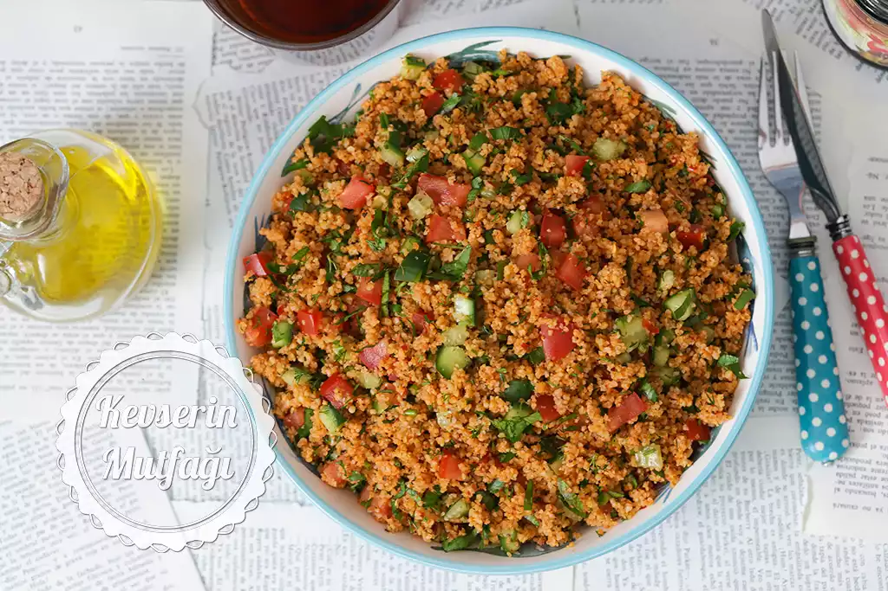

Yemek Tariflerine Hoş Geldiniz
Kısır Salatası
Malzemeler
- 3 adet orta boy havuç
- 2 yemek kaşığı zeytinyağı
- 2 yemek kaşığı yoğurt
- 1 yemek kaşığı mayonez (isteğe bağlı)
- 2 diş sarımsak (ezilmiş)
- Tuz
Yapılışı
- Bulguru ıslatma: İnce bulguru geniş bir kaba alın, üzerine sıcak suyu ekleyip karıştırın ve üzerini kapatarak 10 dakika kadar dinlendirin.
- Salça ve baharatları ekleme: Şişen bulgura domates ve biber salçasını ekleyip iyice yedirin. Ardından tuz, pul biber ve karabiberi ekleyin.
- Yağ ve ekşiler: Zeytinyağı, limon suyu ve nar ekşisini ilave ederek karıştırın.
- Yeşillikler ve sebzeler: İnce doğranmış taze soğan, maydanoz, nane, domates, salatalık ve kırmızı biberi ekleyin. Tüm malzemeleri harmanlayın.
- Servis: Kısırı marul yaprakları üzerinde veya yanında servis edin.
👉 İsteğe göre içine haşlanmış mısır ya da turşu da ekleyebilirsiniz.